04.30.2011 14:25
Definition of Hot Wash and After Action Report
In my paper for US Hydro last week, I
used the terms "Hot Wash" and "After Action Report," which new to
most people. I only learned them last year during the SONS drill in
Portland, ME. I just stumbled apon a document that defines them
from the FEMA Homeland Security
Exercise and Evaluation Program (SHEEP, errr... HSEEP):
Volume I: HSEEP
Overview and Exercise Program Management
Hot Wash and Debrief Both hot washes (for exercise players) and debriefs (for facilitators, or controllers and evaluators) follow discussion- and operations-based exercises. A hot wash is conducted in each functional area by that functional areaâÄôs controller or evaluator immediately following an exercise, and it allows players the opportunity to provide immediate feedback. A hot wash enables controllers and evaluators to capture events while they remain fresh in playersâÄô minds in order to ascertain playersâÄô level of satisfaction with the exercise and identify any issues, concerns, or proposed improvements. The information gathered during a hot wash can be used during the AAR/IP process, and exercise-specific suggestions can be used to improve future exercises. Hot washes also provide opportunities to distribute Participant Feedback Forms, which solicit suggestions and constructive criticism geared toward enhancing future exercises. A debrief is a more formal forum for planners, facilitators, controllers, and evaluators to review and provide feedback on the exercise. It may be held immediately after or within a few days following the exercise. The exercise planning team leader facilitates discussion and allows each person an opportunity to provide an overview of the functional area observed. Discussions are recorded, and identified strengths and areas for improvement are analyzed for inclusion in the AAR/IP. After Action Report / Improvement Plan An AAR/IP is used to provide feedback to participating entities on their performance during the exercise. The AAR/IP summarizes exercise events and analyzes performance of the tasks identified as important during the planning process. It also evaluates achievement of the selected exercise objectives and demonstration of the overall capabilities being validated. The IP portion of the AAR/IP includes corrective actions for improvement, along with timelines for their implementation and assignment to responsible parties. To prepare the AAR/IP, exercise evaluators analyze data collected from the hot wash, debrief, Participant Feedback Forms, EEGs, and other sources (e.g., plans, procedures) and compare actual results with the intended outcome. The level of detail in an AAR/IP is based on the exercise type and scope. AAR/IP conclusions are discussed and validated at an After Action Conference that occurs within several weeks after the exercise is conductedLooks like you are supposed to submit informat from drills via MS Excel templates. HSEEP Exercise Scheduling Data Exchange Standard Information, but there is also an XML Schema.
04.30.2011 10:06
Huge resource of Deepwater Horizon information
I was just looking at the UC Berkeley
Center for Catastrophic Risk
Management (CCRM) Deepwater
Horizon Study Group (DHSG) final report and saw their reference
to their document archive. 1405 entries is lot of information... to
much for me to really deal with. They have a database
search and a link for
all the entries. You can see the files in apache generated
indexes of directories.
This was a chance for me to breakout BeautifulSoup, which I've never used before. It is a tool designed to handle the goo that is normal HTML web pages. It certainly did the trick here. My goal was to create a BibTex file that would get me started looking through the documents and to be able to pull down all of the files with one script. For each file, there is also a text file, so I would go crazy trying to download everything. Before I dig into the code, here are the results.
I made two bib files. If I could download the document successfully, I put it in a dhsg.bib.bz2 (938 entries) and if I couldn't, it went in dhsg-bad.bib.bz2 (467 entries). I loaded the dhsg.bib into JabRef and did an html export: dhsg-bibtex.html
Clearly this is not great, but hopefully someone with the time can take it and look through the documents quickly and turn this into a bibtex with years, real titles, and abstracts. I have uploaded the zip of all the pdf, doc, and txt files. I probably won't leave this online for too long as it is 694MB compressed.
dhsg.zip
In case you are interested, here is the code that produced the bib file based on the listing of all documents. I've made a snapshot of the file here:
dhsg-webpage.html.bz2
Here is what one entry looks like:
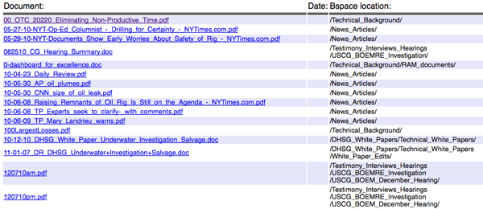
This was a chance for me to breakout BeautifulSoup, which I've never used before. It is a tool designed to handle the goo that is normal HTML web pages. It certainly did the trick here. My goal was to create a BibTex file that would get me started looking through the documents and to be able to pull down all of the files with one script. For each file, there is also a text file, so I would go crazy trying to download everything. Before I dig into the code, here are the results.
I made two bib files. If I could download the document successfully, I put it in a dhsg.bib.bz2 (938 entries) and if I couldn't, it went in dhsg-bad.bib.bz2 (467 entries). I loaded the dhsg.bib into JabRef and did an html export: dhsg-bibtex.html
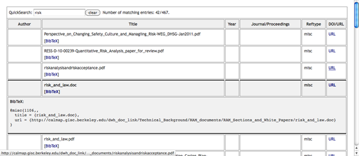
Clearly this is not great, but hopefully someone with the time can take it and look through the documents quickly and turn this into a bibtex with years, real titles, and abstracts. I have uploaded the zip of all the pdf, doc, and txt files. I probably won't leave this online for too long as it is 694MB compressed.
dhsg.zip
In case you are interested, here is the code that produced the bib file based on the listing of all documents. I've made a snapshot of the file here:
dhsg-webpage.html.bz2
Here is what one entry looks like:
<tr>
<td><font size=2 face=helvetica> <A href="http://calmap.gisc.berkeley.edu/dwh_doc_link/DHSG_White_Papers/Technical_White_Papers/White_Paper_Edits/11-01-07_DR_DHSG_Underwater+Investigation+Salvage.doc">11-01-07_DR_DHSG_Underwater+Investigation+Salvage.doc</A></td>
<td><font size=2 face=helvetica> </td>
<td><font size=2 face=helvetica> /DHSG_White_Papers/Technical_White_Papers/White_Paper_Edits/</td>
</tr>
And here is the code that parses the whole deal. It's more
complicated that it should have to be to try to deal with a unicode
character that was in one of the entries.
#!/usr/bin/env python
from BeautifulSoup import BeautifulSoup
import urllib2
import sys
file_types = {'PDF':'PDF', 'DOC':'Word'}
entry_template='''@MISC{{{key},
title = {{{title}}},
file = {file_entry},
url = {{{url}}}
}}'''
bib_good = file('good.bib','w')
bib_bad = file('bad.bib','w')
html = file('dhsg-webpage.html').read()
soup = BeautifulSoup(html)
for row_num,row in enumerate(soup.findAll('tr')):
cols = row.findAll('td')
a = cols[0].find('a') # find the "<a href" tag
if a is None: # Skip header entries with no link
continue
url = a.get('href')
extension = url.split('.')[-1].upper()
title = a.string
cat = cols[2].font.string.strip()
cat = cat.strip('/')
# There was a unicode character in one entry
try:
url = str(url)
except:
url = url.replace(u'\u2013','-')
try:
url = str(url)
except:
continue
url = str(url)
title = str(title)
ok = True
try:
f = urllib2.urlopen(url, None, timeout=120)
data = f.read()
out = open('files/'+title,'w')
out.write(data)
out.close()
pass
except:
ok = False
sys.stderr.write('Unable to open: "'+url+'"\n')
have_txt = True
txt_filename = ''
if ok:
url2 = url[:-3]+'txt'
try:
f = urllib2.urlopen(url2,None, timeout=120)
data = f.read()
txt_filename = 'files/'+title[:-3]+'txt'
out = open(txt_filename,'w')
out.write(data)
out.close()
except:
have_txt = False
if have_txt:
file_entry = '{:files/'+title+':'+file_types[extension]+';'+txt_filename+ ':Text}'
else:
file_entry = '{:files/'+title+':'+file_types[extension]+'}'
bib_entry = entry_template.format(key=row_num,title=title,url=url,file_entry=file_entry)
if ok:
bib_good.write(bib_entry)
else:
bib_bad.write(bib_entry)
After using BeautifulSoup for a little bit, I think it is a very
handy tool. It took me a few minutes to figure out that I could
just access child tags with the dot notation and that if the node
was not there, I would get back a None. I'm now thinking about
parsing my blog entries from nano blogger this way and extracting
all the text for keyword indexing so that I can build myself a nice
bibtex database for all my 4100 entries and my 1850 delicious
bookmarks. I have 187 Deepwater Horizon bookmarks and a lot of them
are intended for use in writing papers. Delicious entries are not
proper XML entires. For example:
<DT><A HREF="http://www.nasa.gov/multimedia/imagegallery/image_feature_1649.html" ADD_DATE="1272401584" PRIVATE="0" TAGS="deepwaterhorizon,oilspill,oilplatform,erma">NASA - Oil Slick Spreads off Gulf Coast</A>
04.29.2011 16:00
Whale tracking at UNH/Blue Ocean Society
Recently, the Substructure crew were
recommending that I talk to the Blue Ocean Folks, who are keeping
records of whale sightings in the NH area. I have yet to drop them
a note, but I got a reminder by seeing an article on the UNH
Extension News website today.
Marine Debris-to-Energy Program Debuts Map of Whale Sightings, Marine Debris off N.H. Coast
Their web map: http://cegis.unh.edu/whalesanddebris/
Marine Debris-to-Energy Program Debuts Map of Whale Sightings, Marine Debris off N.H. Coast
Their web map: http://cegis.unh.edu/whalesanddebris/
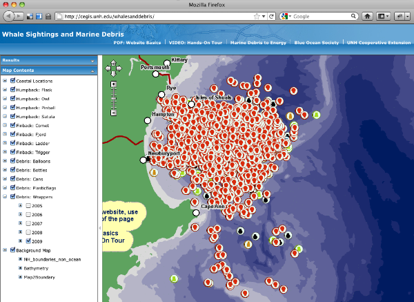
04.28.2011 12:51
IHO data quality questionnaire
While I am not a licensed mariner, I
think the current data quality information in charts is not good.
If you are a mariner, this is your chance to tell someone (I'm not
really sure who) what you think about the whole CATZOC / Source
data diagram situation.
Hydro Internation has an article: IHO Data Quality Survey
The actual survey: https://www.surveymonkey.com/s/IHODQWG
Hydro Internation has an article: IHO Data Quality Survey
The actual survey: https://www.surveymonkey.com/s/IHODQWG
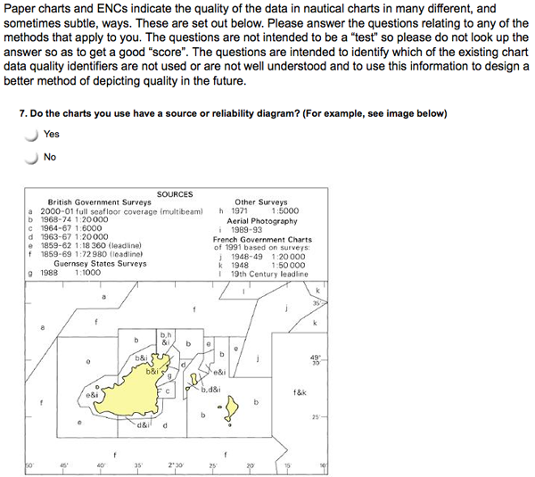
04.28.2011 09:37
Conferences should release bibtex files
I think conferences owe it to their
communities to release bibtex files for the presentations and
posters. To lead (at least partially) by example, I've been sitting
in presentations this morning and producing at bibtex file in
JabRef. Providing this information, preferably with full abstracts
and links to full PDFs, will hopefully make research much easier
for everyone.
If you know how to use bibtex files, you can download the bib file:
ushydro-conference.bib
If you'd like to see a pretty version exported from JabRef, take a look at the HTML version.
ushydro-conference.html
I have put in abstracts when available and at least my paper has a link to the full paper pdf. The rest of papers, the URL just takes you to the US Hydro program.
If anyone is willing to enter the rest of the conference, please send me your resulting bib file and I will swap out this one.
If you know how to use bibtex files, you can download the bib file:
ushydro-conference.bib
If you'd like to see a pretty version exported from JabRef, take a look at the HTML version.
ushydro-conference.html
I have put in abstracts when available and at least my paper has a link to the full paper pdf. The rest of papers, the URL just takes you to the US Hydro program.
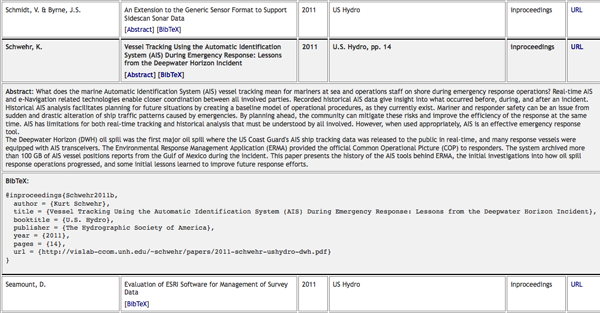
If anyone is willing to enter the rest of the conference, please send me your resulting bib file and I will swap out this one.
04.27.2011 08:45
US Hydro - Day 1 - AIS
Pardon my low light iphone 3gs
pictures in this post...
Hydro International: USHydro2011 Start With Thunder and Lightning
Yesterday morning, I gave a talk in the morning session of US Hydro in the Modern Navigation/AIS Challenges and Applications session.
Larry Mayer (unitentionally) did a fantastic introduction for me by giving the Key Note on the acoustic search for oil and gas in the Deepwater Horizon incident.
During my talk, I brought up something that I did not include in my paper - the idea of putting QR codes on the roofs and sides of response ships. Then when I get overflight pictures from USCG and NOAA planes (that hopefully are GPS tagged), it is possible to automatically identify and locate vessels. If the QR code contains the MMSI and contact info, that I can be sure to add the vessel to the list of response vessels. If the vessel does not have AIS or it is in an area without AIS coverage, we could even do the QR code processing on the plain and kick that data back via satellite to mesh this data into ERMA and other tracking systems. I could even inject fake position messages (either using VTS pseudo locations) or a specially tagged type 1,2,or 3 message. For the Class A position message, we could use a special nevigation status or a special type 5 message with a new "type of electronic position fixing device" that would be "9 - photograph positioned" or something similar.
Kyle gave a presentation after me: Ward and Gallagher, "Utilizing Vessel Traffic and Historical Bathymetric Data to Prioritize Hydrographic Surveys" with some really great examples of things that can be seen in AIS data that is new to NOAA hydrographers. There was a big point made by NOAA that mariners are voting with their AIS tracks for where surveys need to be done. If you are not carrying an AIS transceiver, you are not registering a vote for surveying the areas that you use. This is straight from Rick Brennan, who is standing in as a Nav Manager for the Virginia area at the moment.
I asked Kyle if they include Class B in their analysis. I will have to double check, as my noaadata code drops Class B into a different database table.
Kyle showing surprise usage areas in the Texas, LA area. Ships do not use the official/charted lightering area.
After Kyle, we had two informative talks on the status of AIS Application Specific Messages (ASM; formerly called "binary messages") by Lee Alexander and an evaluation of some aspects of implementation of the meteorology and hydrography portions of the specification.
There are a number of survey vessels outside of the hotel for demonstrations of survey technologies.
Hydro International: USHydro2011 Start With Thunder and Lightning
Yesterday morning, I gave a talk in the morning session of US Hydro in the Modern Navigation/AIS Challenges and Applications session.
Larry Mayer (unitentionally) did a fantastic introduction for me by giving the Key Note on the acoustic search for oil and gas in the Deepwater Horizon incident.
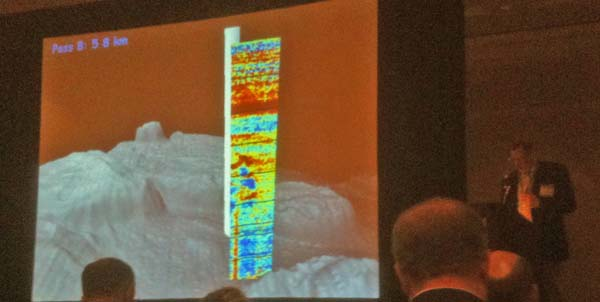
During my talk, I brought up something that I did not include in my paper - the idea of putting QR codes on the roofs and sides of response ships. Then when I get overflight pictures from USCG and NOAA planes (that hopefully are GPS tagged), it is possible to automatically identify and locate vessels. If the QR code contains the MMSI and contact info, that I can be sure to add the vessel to the list of response vessels. If the vessel does not have AIS or it is in an area without AIS coverage, we could even do the QR code processing on the plain and kick that data back via satellite to mesh this data into ERMA and other tracking systems. I could even inject fake position messages (either using VTS pseudo locations) or a specially tagged type 1,2,or 3 message. For the Class A position message, we could use a special nevigation status or a special type 5 message with a new "type of electronic position fixing device" that would be "9 - photograph positioned" or something similar.
Kyle gave a presentation after me: Ward and Gallagher, "Utilizing Vessel Traffic and Historical Bathymetric Data to Prioritize Hydrographic Surveys" with some really great examples of things that can be seen in AIS data that is new to NOAA hydrographers. There was a big point made by NOAA that mariners are voting with their AIS tracks for where surveys need to be done. If you are not carrying an AIS transceiver, you are not registering a vote for surveying the areas that you use. This is straight from Rick Brennan, who is standing in as a Nav Manager for the Virginia area at the moment.
I asked Kyle if they include Class B in their analysis. I will have to double check, as my noaadata code drops Class B into a different database table.
We did not filter them out. The would have been lumped into the "other" category for our stats calculations.Showing some of the issues with NAIS data with ships as they leave solid coverage areas.
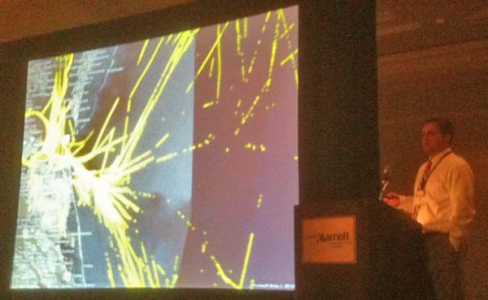
Kyle showing surprise usage areas in the Texas, LA area. Ships do not use the official/charted lightering area.
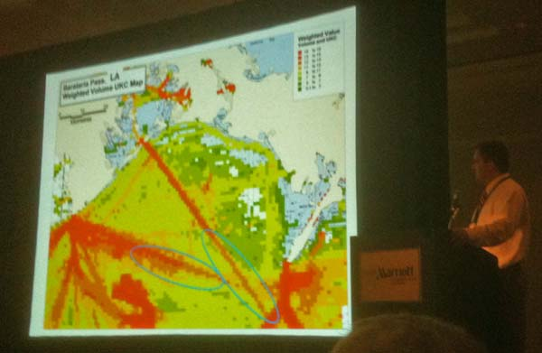
After Kyle, we had two informative talks on the status of AIS Application Specific Messages (ASM; formerly called "binary messages") by Lee Alexander and an evaluation of some aspects of implementation of the meteorology and hydrography portions of the specification.
There are a number of survey vessels outside of the hotel for demonstrations of survey technologies.
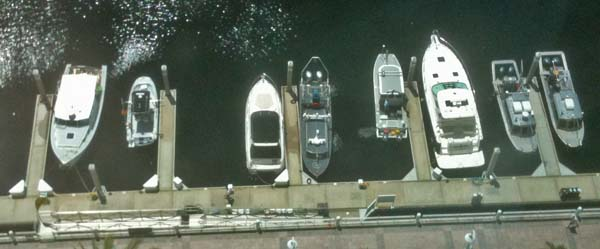
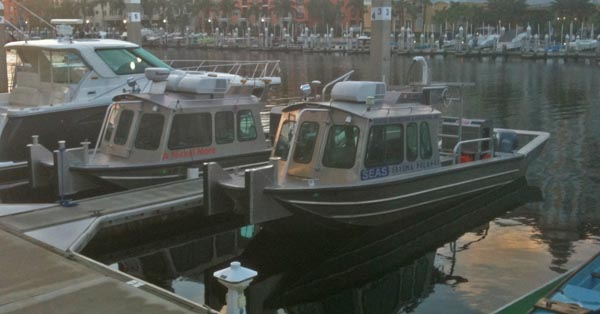
04.26.2011 13:40
ERMA in Tampa
I am in Tampa for the US Hydro
conference. I got a great view of a cruise liner heading out
yesterday. I fired up ERMA and there it was. Helps to be on the
22nd floor to get a good view. I took the photo from the Marriott
in the red circle.
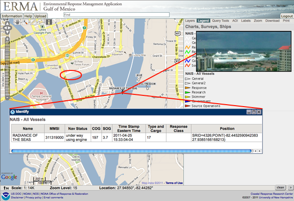
04.24.2011 15:23
USCG Notice of Arrival (NOA) and the Ship Arrival Notification System (SANS)
Thanks to Phil for pointing me at
this article. I have no idea the impliplications of SANS and the
new rules that every vessel coming into the United States will soon
have to file a NOA through SANS. I may have access to NAIS, but I
don't have access to anything to do with NOAs. These article
definition give you insight into the USCG if you know how to read
them. And on Page 53, which software the Coastie using? PAWSS?
Doesn't look like TV32.
The Spring11 issue of the USCG magazing Service Lines has several interesting articles.
Page 47... C4IT is a new name to me. "command, control, communications, computers and information technology"
At which point I ran M-x spook in emacs just to make sure the NSA, DHS, CIA, and FBI all take notice of my blog:
Following that article, on page 52, there is "The C4IT Sercive Center." There I got the definition of C4 and learned about "compliance with the Chief Financial Officers Act and Anti-Deficiency Act." Errr? What? And they talk about "Lean Six Sigma" process and metrics tools, which reminds me of ISO9000 certification that I got to experience at NASA. I like this quote (emphasis added):
Oh, and since I mentioned TV32 at the top. Here it is running at NOAA. Thanks to Mike Thompson for this image! There are many many tons of right whales in the Cape Cod area right now. ListenForWhales.org
And for those paying attention, I'm now transmitting both the RTCM style message and the IMO Circ 289 internation standard message. TV32 can't read the IMO message yet, but both libais and ais-areanotice-py can. And hopefully additional programs will pick up IMO Circ 289 support in the near future.
The Spring11 issue of the USCG magazing Service Lines has several interesting articles.
Page 47... C4IT is a new name to me. "command, control, communications, computers and information technology"
Deepwater Horizon Support In support of the response to the Deepwater Horizon oil spill, Telecommunication and Information Systems Command (TISCOM) and the C4IT Service Center Field Services Division (FSD) ensured that the Unified Area Command and all of the associated Incident Command Posts had essential connectivity to perform their mission. When it became apparent that the spill response was not going to end anytime soon, the FSD quickly reached across all of the Coast GuardâÄôs Electronics Support Units to design and staff an extensive support organization that maintained an average of 60 additional personnel in theater. These personnel ensured operators had the C4IT support needed for response and cleanup efforts. While TISCOM may be more than 1,000 miles from the Gulf of Mexico, the entire command contributed to the oil spill cleanup by providing network connectivity and Coast Guard standard workstations critical to accomplish the mission.Page 49: "Ship Arrival Notification System Prepares for Increased Demand"
... Since standing up in October 2001, the NVMC has vetted nearly 1.1 million NOA submissions. ... proposed to the Code of Federal Regulations requiring that all vessels, regardless of size, submit an NOA prior to arrival in a U.S. port. The changesâÄîwhich could be finalized as soon as this summerâÄîcould have significant ramifications for current system capabilities, as they are projected to increase NOA submissions by 447 percent overnight. This roughly equates to 558,000 NOAs annually.It all sounds good until I hit this:
The most notable system upgrade is the auto-validation logic feature. This innovative component allows for computer-based automated vetting of an NOA submission. Along with vetting NOAs, it avoids an estimated $1.25 million in annual labor costs associated with hiring 15 additional watchstanders. Within the first 30 days of release, 52.5 percent of all NOAs were being auto-validated. ... Another beneficial attribute of the October release was the keyword alert feature. This element scans NOA submissions for 155 trigger words such as "pirate," "terrorist" and "hostage."Is the idea that if I have terrorists on my ship and I'm too scared to hit the "I'm being boarded button" (which I've heard reports where it has been bumped a few days before anyone noticed) or call via satphone, you can just insert the word terrorist into your NOA and the USCG will come save you?
At which point I ran M-x spook in emacs just to make sure the NSA, DHS, CIA, and FBI all take notice of my blog:
Yukon Mole industrial intelligence class struggle Uzbekistan 9705 Samford Road White House Centro president Sears Tower Peking CIDA FTS2000 Echelon munitionsReally? This is going to do something useful? And then I got to:
SANS Schema 3.0 was developed using the .NET framework, which allows for better integration of code, a more enhanced class library and easier deployments of future releases and system upgrades.What if you want to deploy on OpenBSD or a locked down RedHat Enterprise Linux machine? And what is the word "Schema" doing in there? Can I run an XML validator on their system or something?
Following that article, on page 52, there is "The C4IT Sercive Center." There I got the definition of C4 and learned about "compliance with the Chief Financial Officers Act and Anti-Deficiency Act." Errr? What? And they talk about "Lean Six Sigma" process and metrics tools, which reminds me of ISO9000 certification that I got to experience at NASA. I like this quote (emphasis added):
For major platforms such as cutters and aircraft with organic C4IT personnel, the platform product line manager is the preferred point of contact for all platform support. Requests for new, enhanced or modified C4IT capability should be sent through the chain of command to the responsible program manager at Coast Guard headquarters.Do I have to look somewhere else if I have "inorganic C4IT personnel" on my cutters and aircraft??? And where can I pick up a few of these inorganic personnel. They sound like they might come in handy.
Oh, and since I mentioned TV32 at the top. Here it is running at NOAA. Thanks to Mike Thompson for this image! There are many many tons of right whales in the Cape Cod area right now. ListenForWhales.org
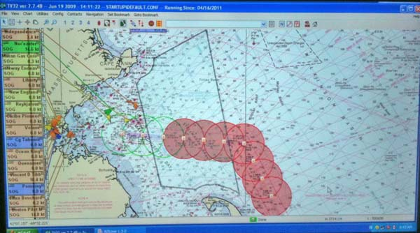
And for those paying attention, I'm now transmitting both the RTCM style message and the IMO Circ 289 internation standard message. TV32 can't read the IMO message yet, but both libais and ais-areanotice-py can. And hopefully additional programs will pick up IMO Circ 289 support in the near future.
04.24.2011 10:49
MISLE incidents in the Gulf of Mexico
In preparation for US Hydro next
week, I broke out my copy of the MISLE incident database as of
2010-06-13 and pulled out just the Gulf of Mexico. I had to reduce
the time window from 1996- down to 2005- for Google Earth to handle
the visualization on my old laptop. That got me down to 12430
incidents in the Gulf. I definitely need to do more analysis of
this data and I'm hoping to get the data into Google Fusion Tables
to allow anyone to dig into the data. As it stands, there is just
too much going on to be able to see much.
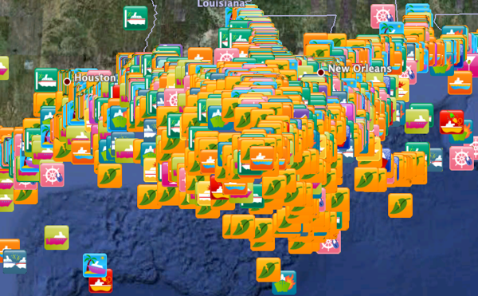
04.24.2011 09:03
Marine anomaly detection
Thanks to Colin for finding this
conference. I'm not planning on attending, but I'll be checking out
the results of the conference. Props to this conference for
providing a LaTex template!
International Workshop on Maritime Anomaly Detection (MAD) call for abstracts:
International Workshop on Maritime Anomaly Detection (MAD) call for abstracts:
The field of maritime anomaly detection encompasses the detection of
suspicious or abnormal vessel behavior in potentially very large
datasets or data streams (e.g., radar and AIS data streams). To
support operators in the detection of anomalies, methods from machine
learning, data mining, statistics, and knowledge representation may be
used. The scientific study of anomaly detection brings together
researchers in computer science, artificial intelligence, and
cognitive science. For the maritime domain, anomaly detection plays a
crucial role in supporting maritime surveillance and in enhancing
situation awareness. Typical applications include the prediction of
collisions, the detection of vessel traffic violations, and the
assessment of potential threats.
The goal of MAD 2011 is to bring together researchers from academia
and industry in a stimulating discussion of state-of-the-art
algorithms for maritime anomaly detection and future directions of
research and development. The workshop program includes invited talks,
contributed talks, and posters. Contributed talks and posters will be
selected on the basis of quality and originality. Accepted abstracts
will be published in the MAD workshop proceedings.
Topics of interests include, but are not limited to:
Anomaly, Outlier, and Novelty Detection
Machine Learning / Pattern Recognition / Data Mining
(Online) Active Learning / Human-in-the-Loop Approaches
Feature Selection / Metric learning
(Dis)similarity measures / kernels for vessel trajectories
Generating artificial anomalous vessel trajectories
Incorporating / Representing / Visualizing Maritime Domain Knowledge
We welcome contributions in the form of case studies and contributions
concerning anomaly detection in other domains that may be of relevance
to the maritime domain.
Abstract deadline: May 27, 2011, 23:59 UTC.04.22.2011 12:53
Upcoming talks on Tuesday
Next week is US Hydro in Tampa. I'll
be giving two talks on Tuesday:
In the morning, I'm a part of the regular Program
2nd talk in the 10:30 session: Vessel Tracking Using the Automatic Identification System (AIS) During Emergency Response: Lessons from the Deepwater Horizon Incident (pdf).
In the afternoon at 4:00PM, I'm giving an invited presentation in the 3D/4D Visualization Techniques for Quality Control and Processing workshop.
In the morning, I'm a part of the regular Program
2nd talk in the 10:30 session: Vessel Tracking Using the Automatic Identification System (AIS) During Emergency Response: Lessons from the Deepwater Horizon Incident (pdf).
In the afternoon at 4:00PM, I'm giving an invited presentation in the 3D/4D Visualization Techniques for Quality Control and Processing workshop.
Session Abstract: The vast increase in data from multibeam sonar surveys presents many challenges in managing, interacting, presenting and particularly verifying that the data is "good" and suitable for the intended purpose or client - hydrographic, geologic, engineering, geo-hazard or site surveys. Expansion of sonar capabilities to retain water column data, and the increasing use of backscatter for seabed characterization, expands the requirements for validation, analysis and presentation. Instead of sparse data that must be interpolated, we now have near complete and often overlapping coverage of the seafloor, and the combination of data density and 3D visualization provides a greatly enhanced understanding of seafloor processes. The workshop will explore the use of 4D visualization in the multibeam sonar data processing workflow for analysis and validation. Examples of methods and procedures will be presented.My talk is titled: "4D Non-bathy Data in Support of Hydrographic Planning".
04.22.2011 04:41
Tim Cole speaking at CCOM today
Today, we have Tim Cole from NOAA
NEFSC coming to give a talk at CCOM. I've been working with Tim and
the rest of the crew of the North Atlantic Right Whale
Sighting Survey and Sighting Advisory System (SAS) for a couple
years now and you might recognize the Google Earth visualization of
the group's whale sightings on their web page from my past web
blogs. We have been collaborating on some database work that I hope
to write about soon.
Come join us for Tim's talk - either in person or via the webinar!
The NEFSC team spends long hours in tight planes helping to keep track of this endangered species. Christin Khan, one of the team members, has a great blog covering what they do and right whales in general: Christin Khan's blog
Come join us for Tim's talk - either in person or via the webinar!
Friday, April 22th, 2011 3:00 - 4:00 pm Chase Ocean Engineering Lab, Rm. 130 (The Video Classroom) Tim Cole - Research Fisheries Biologist Protected Species Branch, NOAA Northeast Fisheries Science Center Right Whale Distribution and Protection in the Gulf of Maine webinar registration link: https://www2.gotomeeting.com/register/734726586 NOAA's Northeast Fisheries Science Center right whale aerial survey program is dedicated to locating and recording the seasonal distribution of right whales within U.S. federal waters north of 41º 20' N and east of 72° 50' W. The objectives of the surveys include: (1) to provide right whale sighting locations to mariners to mitigate whale/ship collisions, (2) to census offshore areas where dedicated survey effort had been absent since at least 1992, and (3) to photographically identify individual right whales found in these offshore areas. This talk will describe our survey methods and findings, and discuss the ecology of right whales in the Gulf of Maine.
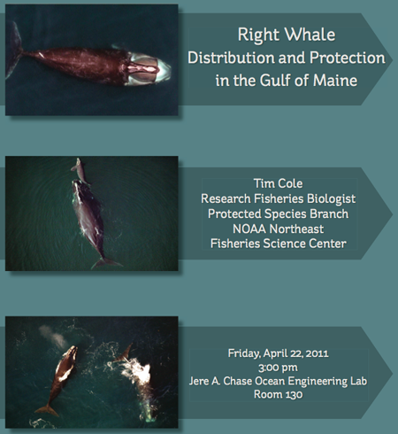
The NEFSC team spends long hours in tight planes helping to keep track of this endangered species. Christin Khan, one of the team members, has a great blog covering what they do and right whales in general: Christin Khan's blog
04.21.2011 11:14
NOAA's DWH one year later
NOAA NOS Deepwater
Horizon: One Year Later with a podcast that features Debbie
Payton.
04.19.2011 20:51
Nigel Calder, the COTF and Panbo
Thanks to Ben for a shout out to the
Chart of the Future Project on Panbo:
Nigel Calder update, charts & HyMar
Nigel Calder update, charts & HyMar
... I'll be particularly interested to see what he discovers when visiting the Chart of the Future project at UNH, which is apparently related to a new vector chart standard (interesting S100 PDF here). ...
04.19.2011 13:25
US Hydro paper - DWH AIS
I've got my US Hydro paper in. This
is the background to the talk I'm giving a week from today.
2011-schwehr-ushydro-dwh.pdf
Trackbacks:
Eric S. Raymond (ESR): Broadening my Deepwater Horizons. I cite ESR and the GPSD project in the paper.
2011-schwehr-ushydro-dwh.pdf
Vessel Tracking Using the Automatic Identification System (AIS) During Emergency Response: Lessons from the Deepwater Horizon Incident What does the marine Automatic Identification System (AIS) vessel tracking mean for mariners at sea and operations staff on shore during emergency response operations? Real-time AIS and e-Navigation related technologies enable closer coordination between all involved parties. Recorded historical AIS data give insight into what occurred before, during, and after an incident. Historical AIS analysis facilitates planning for future situations by creating a baseline model of operational procedures, as they currently exist. Mariner and responder safety can be an issue from sudden and drastic alteration of ship traffic patterns caused by emergencies. By planning ahead, the community can mitigate these risks and improve the efficiency of the response at the same time. AIS has limitations for both real-time tracking and historical analysis that must be understood by all involved. However, when used appropriately, AIS is an effective emergency response tool. The Deepwater Horizon (DWH) oil spill was the first major oil spill where the US Coast Guards AIS ship tracking data was released to the public in real-time, and many response vessels were equipped with AIS transceivers. The Environmental Response Management Application (ERMA) provided the official Common Operational Picture (COP) to responders. The system archived more than 100 GB of AIS vessel positions reports from the Gulf of Mexico during the incident. This paper presents the history of the AIS tools behind ERMA, the initial investigations into how oil spill response operations progressed, and some initial lessons learned to improve future response efforts.Want even more? I gave a talk last fall at CCOM on pretty much the same topic:
CCOM Seminar - Kurt Schwehr - ERMA - 9/24/2010 from ccom unh on Vimeo.
Trackbacks:
Eric S. Raymond (ESR): Broadening my Deepwater Horizons. I cite ESR and the GPSD project in the paper.
04.14.2011 07:58
Camp KDE: Geolocation
Linux Weekly News has consistently be
a great source of articles. This last week, there was very
interesting article on geolocation. I still really really really
want to get location awareness into emacs org-mode with the ability
to slide between location sources and mark the quality and type of
geolocation used. I've been trying to get into lisp for a while
now, but it's definitely a different way of thinking than I do on a
day-to-day basis, which means learning lisp will be "good for me".

Camp KDE: Geolocation
openBmap.org looks like it might be a start. The data is creative commons Attribution-Share Alike 3.0 Unported and Open Database License (ODbL) v1.0
Trackback: slashgeo: openBmap.org: Open Map of Wireless Communicating Objects
Camp KDE: Geolocation
At this year's edition of Camp KDE, John Layt reported in on his research to try to determine the right course for adding geolocation features to KDE. Currently, there is no common API for applications to use for tagging objects with their location or to request geolocation data from the system. There are a number of different approaches that existing applications have taken, but a shared infrastructure that allows geolocation data to be gathered and shared between applications and the desktop environment is clearly desirable. ... Existing choices There are a number of current solutions that might be adapted for the needs of a KDE platform solution. One is the Plasma DataEngine for geolocation that has been used by Plasma applets, mostly for weather applications so far. It has backends for gpsd or IP-based geolocation but does not provide support for geocoding. Marble and libmarble have an extensive feature set for geolocation and mapping using free data providers. The library has few dependencies and can be used in a Qt-only mode, so that there are no KDE dependencies. The library itself is around 840K in size, but the data requirements are, unsurprisingly, much higher, around 10M. The biggest problem with using libmarble is that it does not provide a stable interface, as binary and API compatibility are not guaranteed between releases. Another option is GeoClue ...We need more open geolocation services... where is opengeolocation.org?
openBmap.org looks like it might be a start. The data is creative commons Attribution-Share Alike 3.0 Unported and Open Database License (ODbL) v1.0
Trackback: slashgeo: openBmap.org: Open Map of Wireless Communicating Objects
04.11.2011 14:13
ITU 1371-4 defining AIS is now a free download
I don't know when this happened, but
I just found that ITU-R
M.1371-4, released in April 2010 is a free download. This is
the document that currently defines the core of AIS: "Technical
characteristics for an automatic identification system using
time-division multiple access in the VHF maritime mobile band. The
next thing ITU needs to do is adopt an open license for their
documents (e.g. Creative Commons Attribution CC BY).
The IEC AIS documents are still closed and very pricy, but this is a start! Anyone know the story of how and when this happened?
The IEC AIS documents are still closed and very pricy, but this is a start! Anyone know the story of how and when this happened?
04.10.2011 08:52
NH Spring sunrise
I haven't posted any outdoor photos
in a while. Here is a sunrise from a week ago.
04.10.2011 08:43
Video tracking of ships is now patented
I am now confident that the patent
system is garbage. Tracking ships with zoom cameras is now patented
with the application being submitted in 2005. If you want prior
art, look no further than the late 1990's with the CMU Robotics
project Video Surveillance
and Monitoring and replace the words "human," "car," and
"truck" with the word ship. In the May 2000 final
tech report, you will find stuff way more advanced than what is
in the patent.
Patent 7889232: Method and system for surveillance of vessels. Filed 2005, granted 2011.
Patent 7889232: Method and system for surveillance of vessels. Filed 2005, granted 2011.
A surveillance system and method for vessels. The system comprises surveillance means for surveying a waterway; vessel detection means for determining the presence and location of a vessel in the waterway based on information from the surveillance means; camera means for capturing one or more images of the vessel; image processing means for processing the images captured by the camera means for deriving surveillance data; wherein the camera means captures the vessel images based on information from the vessel detection means, the surveillance data from the image processing means, or both. The images can be used to classify and identify the vessel by name and category, possibly also to compare the category with that previously registered for a vessel of this name. The vessel can be tracked, including by speed and direction until it leaves the surveyed waterway.Dear patent examiners, really? In 6 years, you couldn't find this prior art? Object identification and tracking is one of the core areas of computer vision. Doing this is an obvious thing to try. The algorithms to make it work reliably (which are not in the patent) can be challenging.
04.07.2011 19:02
NOAA CIO in the news
Thanks to Crescent for posting this
Information Week Government article:
NOAA CIO Tackles Big Data (sorry about the annoying adds)
Oh, and if you make it to the second page, GeoPlatform and UNH get a mention as I sit here taking a moment away from writing a paper on the use of AIS during Deepwater Horizon.
... Its Princeton, N.J., data center alone stores more than 20 petabytes of data. "I focus much of my time on data lifecycle management," said Joe Klimavicz, who discussed his IT strategy in a recent interview with InformationWeek at NOAA headquarters in Silver Spring, Md. The keys to ensuring that data is useable and easy to find, he says, include using accurate metadata, publishing data in standard formats, and having a well-conceived data storage strategy. NOAA is responsible for weather and climate forecasts, coastal restoration, and fisheries management, and much of Uncle SamâÄôs oceanic, environmental, and climate research. The agency, which spends about $1 billion annually on IT, is investing in new supercomputers for improved weather and climate forecasting and making information available to the public through Web portals such as Climate.gov and Drought.gov. ... NOAA collects 80 TB of scientific data daily, and Klimavicz expects there to be a ten-fold increase in measurements by 2020. ...I know nothing about the ArcSight security tools that NOAA uses other than they are now owned by HP. But, as an (mostly) outside observer, NOAA and other government agencies have a long way to go to get towards IT policies that makes sense and it really feels like they are headed in the wrong direction with things like security. Security has failed when it frequently stops people from getting work done in normal situations.
Oh, and if you make it to the second page, GeoPlatform and UNH get a mention as I sit here taking a moment away from writing a paper on the use of AIS during Deepwater Horizon.
... GeoPlatform.gov/gulfresponse, co-developed by NOAA and the University of New Hampshire's Coastal Response Research Center, was moved from an academic environment to a public website in weeks, receiving millions of hits in its first day alone. "Not only did we have to support the first responders, but we had to be sure we were putting data out there for public consumption," he said. ...
04.07.2011 10:53
PostGIS 2.0 with Rasters, 3D, and topologies
Linux Weekly News (LWN) has a nice
summary and discussion of what is coming in PostGIS 2.0: Here be dragons: PostGIS 2.0 adds
3D, raster image, and topology support. Pretty exciting set of
new features!
Trackback: slashgeo
Trackback: slashgeo
04.05.2011 07:37
Must read USCG articles for AIS and eNavigation
I just found the Spring
2011 issue of The Coast Guard Journal of Safety & Security
at Sea - Proceedings of the Marine Safety & Security Council.
This issue has a number of must read articles for me:
Maffia, Detweiler, Lahn, Collaborating to Mitigate Risk: Ports and Waterways Safety Assessment (PAWSA).
Burns, Vessel Traffic Services as Information Managers.
Cairns, e-Navigation: Revolution and evolution.
Jorge Arroyo: The Automatic Identification System: Then, now, and in the future.
Krouse and Berkson: Coast Guard Cooperation in the Arctic: USCGC Healy's continental shelf mission.
And there are more interesting reads...
Maffia, Detweiler, Lahn, Collaborating to Mitigate Risk: Ports and Waterways Safety Assessment (PAWSA).
Burns, Vessel Traffic Services as Information Managers.
Cairns, e-Navigation: Revolution and evolution.
Jorge Arroyo: The Automatic Identification System: Then, now, and in the future.
Krouse and Berkson: Coast Guard Cooperation in the Arctic: USCGC Healy's continental shelf mission.
And there are more interesting reads...
04.03.2011 15:27
2004 USCG VTS video
Things are changing fast with AIS,
LRIT, satellite data, and modern 3G and 4G data for how things are
done, but this 2004 video is still very interesting. I had not
heard (at least I don't remember) the term Vessel Movement
Reporting System (VMRS) and I had forgotten about Joint Harbor
Operations Center (JHOC). It's not the helpful to have the video
here, so I
uploaded it to YouTube as it is a USCG video and not subject to
copyright.
Found via: Joint Harbor Operations, Part 1 (NavGear)
Found via: Joint Harbor Operations, Part 1 (NavGear)
04.02.2011 09:22
gtest - getting it to actually work
I've just pushed changed to github
for libais that have working google framework tests (gtest). Turns
out that compiling my test code with "-D_GLIBCXX_DEBUG" brings out
what I think might some bugs in either gtest, libc on the mac or
gcc 4.2. I've reported it and don't have time to dig farther into
the trouble. The build system right now in libais is a hack, so it
will take a few minutes of hacking to make this work on other
platforms.
For JSON, ESR and I have talked about his implementation of AIS JSON and we both agree that http://wiki.ham.fi/JSON_AIS.en is an interesting start, but it doesn't cover all the fields and not all of the message types.
As for my Mac OSX gtest troubles, with malloc/free, Vlad pointed me to gtest Issue 189: 10.6 SL : pointer being freed was not allocated and as discussed in this apple dev thread, I hit the trouble when I have _GLIBCXX_DEBUG defined.
make test2 g++ -m32 -g -Wall -Wimplicit -W -Wredundant-decls \ -Wmissing-prototypes -Wunknown-pragmas -Wunused -Wunused \ -Wendif-labels -Wnewline-eof -Wno-sign-compare -Wshadow -O \ -Wuninitialized ais1_2_3_unittest.cpp ais.cpp ais1_2_3.cpp -o \ ais1_2_3_unittest -I/sw32/include -D_THREAD_SAFE -L/sw32/lib -lgtest \ -D_THREAD_SAFE -lgtest_main -lpthread ./ais1_2_3_unittest Running main() from gtest_main.cc [==========] Running 3 tests from 1 test case. [----------] Global test environment set-up. [----------] 3 tests from TestAis1_2_3 [ RUN ] TestAis1_2_3.AisMsg [ OK ] TestAis1_2_3.AisMsg (0 ms) [ RUN ] TestAis1_2_3.BitDecoding [ OK ] TestAis1_2_3.BitDecoding (1 ms) [ RUN ] TestAis1_2_3.AisMsg1 [ OK ] TestAis1_2_3.AisMsg1 (0 ms) [----------] 3 tests from TestAis1_2_3 (1 ms total) [----------] Global test environment tear-down [==========] 3 tests from 1 test case ran. (1 ms total) [ PASSED ] 3 tests.As unittests usually do, I've already found 3-4 bugs with one of them being critical just from writing the first couple tests. However, I'm now realizing how much code I will have to write to get reasonable coverage and push in all my sample messages. I can either write C++ code from python that tests the methods or I'm contemplating writing a xml, yaml, json or csv style file of alternating AIS and decoded messages. If there was an obvious json parser for me to use from C++, I might go that route as it seems friendlier to the eyes than XML.
For JSON, ESR and I have talked about his implementation of AIS JSON and we both agree that http://wiki.ham.fi/JSON_AIS.en is an interesting start, but it doesn't cover all the fields and not all of the message types.
As for my Mac OSX gtest troubles, with malloc/free, Vlad pointed me to gtest Issue 189: 10.6 SL : pointer being freed was not allocated and as discussed in this apple dev thread, I hit the trouble when I have _GLIBCXX_DEBUG defined.
2(13993) malloc: *** error for object 0xa0ab8db0: pointer being freed was not allocated *** set a breakpoint in malloc_error_break to debug 2(13993) malloc: *** error for object 0xa0ab8db0: pointer being freed was not allocated *** set a breakpoint in malloc_error_break to debug